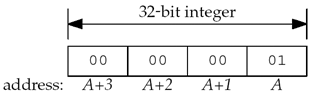
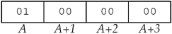
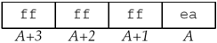

Chapter 5
| | | 5.1 | The duration of the TIME_WAIT state should be between 1 and 4 minutes, giving an MSL between 30 seconds and 2 minutes. | | | | 5.2 | Our client/server programs do not work with a binary file. Assume the first 3 bytes in the file are binary 1, binary 0, and a newline. The call to fgets in Figure 5.5 reads up to MAXLINE-1 characters, or until a newline is encountered, or up through the EOF. In this example, it will read the first three characters and then terminate the string with a null byte. But, our call to strlen in Figure 5.5 returns 1, since it stops at the first null byte. One byte is sent to the server, but the server blocks in its call to readline, waiting for a newline character. The client blocks waiting for the server's reply. This is called a deadlock: Both processes are blocked waiting for something that will never arrive from the other one. The problem here is that fgets signifies the end of the data that it returns with a null byte, so the data that it reads cannot contain any null bytes. | | | | 5.3 | 5.3 Telnet converts the input lines into NVT ASCII (Section 26.4 of TCPv1), which terminates every line with the two-character sequence of a CR (carriage return) followed by an LF (linefeed). Our client adds only a newline, which is actually a linefeed character. Nevertheless, we can use the Telnet client to communicate with our server as our server echoes back every character, including the CR that precedes each newline. | | | | 5.4 | No, the final two segments of the connection termination sequence are not sent. When the client sends the data to the server, after we kill the server child (the "another line"), the server TCP responds with an RST. The RST aborts the connection and also prevents the server end of the connection (the end that did the active close) from passing through the TIME_WAIT state. | | | | 5.5 | Nothing changes because the server process that is started on the server host creates a listening socket and is waiting for new connection requests to arrive. What we send in Step 3 is a data segment destined for an ESTABLISHED TCP connection. Our server with the listening socket never sees this data segment, and the server TCP still responds to it with an RST. | | | | 5.6 | Figure E.1 shows the program. Running this program under Solaris generates the following:
solaris % tsigpipe 192.168.1.10
SIGPIPE received
write error: Broken pipe
The initial sleep of two seconds is to let the daytime server send its reply and close its end of the connection. Our first write sends a data segment to the server, which responds with an RST (since the daytime server has completely closed its socket). Note that our TCP allows us to write to a socket that has received a FIN. The second sleep lets the server's RST be received, and our second write generates SIGPIPE. Since our signal handler returns, write returns an error of EPIPE. | | | | 5.7 | Assuming the server host supports the weak end system model (which we describe in Section 8.8), everything works. That is, the server host will accept an incoming IP datagram (which contains a TCP segment in this case) arriving on the leftmost datalink, even though the destination IP address is the address of the rightmost datalink. We can test this by running our server on our host linux (Figure 1.16) and then starting the client on our host solaris, but specifying the other IP address of the server (206.168.112.96) to the client. After the connection is established, if we run netstat on the server, we see that the local IP address is the destination IP address from the client's SYN, not the IP address of the datalink on which the SYN arrived (as we mentioned in Section 4.4).
Figure E.1 Generate SIGPIPE.
tcpcliserv/tsigpipe.c
1 #include "unp.h"
2 void
3 sig_pipe(int signo)
4 {
5 printf("SIGPIPE received\n");
6 return;
7 }
8 int
9 main(int argc, char **argv)
10 {
11 int sockfd;
12 struct sockaddr_in servaddr;
13 if (argc != 2)
14 err_quit("usage: tcpcli <IPaddress>");
15 sockfd = Socket(AF_INET, SOCK_STREAM, 0);
16 bzero(&servaddr, sizeof(servaddr));
17 servaddr.sin_family = AF_INET;
18 servaddr.sin_port = htons(13); /* daytime server */
19 Inet_pton(AF_INET, argv[1], &servaddr.sin_addr);
20 Signal(SIGPIPE, sig_pipe);
21 Connect(sockfd, (SA *) &servaddr, sizeof(servaddr));
22 sleep(2);
23 Write(sockfd, "hello", 5);
24 sleep(2);
25 Write(sockfd, "world", 5);
26 exit(0);
27 }
| | | | 5.8 | Our client was on a little-endian Intel system, where the 32-bit integer with a value of 1 was stored as shown in Figure E.2.

The 4 bytes are sent across the socket in the order A, A+1, A+2, and A+3 where they are stored in the big-endian format, as shown in Figure E.3.

This value of 0x01000000 is interpreted as 16,777,216. Similarly, the integer 2 sent by the client will be interpreted at the server as 0x02000000, or 33,554,432. The sum of these two integers is 50,331,648, or 0x03000000. When this bigendian value on the server is sent to the client, it is interpreted on the client as the integer value 3. The 32-bit integer value of - 22 is represented on the little-endian system as shown in Figure E.4, assuming a two's-complement representation of negative numbers.

This is interpreted on the big-endian server as 0xeaffffff, or - 352,321,537. Similarly, the little-endian representation of - 77 is 0xffffffb3, but this is represented on the big-endian server as 0xb3ffffff, or - 1,275,068,417. The addition on the server yields a binary result of 0x9efffffe, or - 1,627,389,954. This big-endian value is sent across the socket to the client where it is interpreted as the little-endian value 0xfeffff9e, or - 16,777,314, which is the value printed in our example. | | | | 5.9 | The technique is correct (converting the binary values to network byte order), but the two functions htonl and ntohl cannot be used. Even though the l in these functions once meant "long," these functions operate on 32-bit integers (Section 3.4). On a 64-bit system, a long will probably occupy 64 bits and these two functions will not work correctly. One might define two new functions, hton64 and ntoh64, to solve this problem, but this will not work on systems that represent longs using 32 bits. | | | | 5.10 | In the first scenario, the server blocks forever in the call to readn in Figure 5.20 because the client sends two 32-bit values but the server is waiting for two 64-bit values. Swapping the client and server between the two hosts causes the client to send two 64-bit values, but the server reads only the first 64 bits, interpreting them as two 32-bit values. The second 64-bit value remains in the server's socket receive buffer. The server writes back one 32-bit value and the client will block forever in its call to readn in Figure 5.19, waiting to read one 64-bit value. | | | | 5.11 | IP's routing function looks at the destination IP address (the server's IP address) and searches the routing table to determine the outgoing interface and next hop (Chapter 9 of TCPv1). The primary IP address of the outgoing interface is used as the source IP address, assuming the socket has not already bound a local IP address. |
|